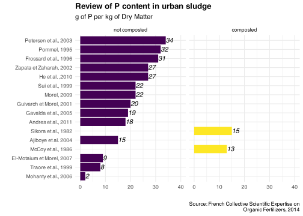
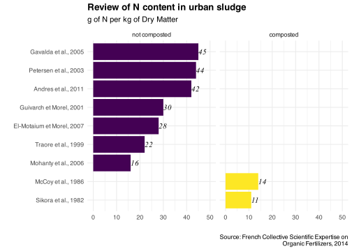
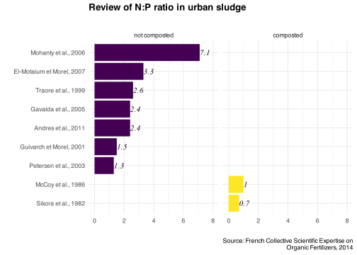
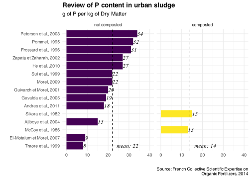
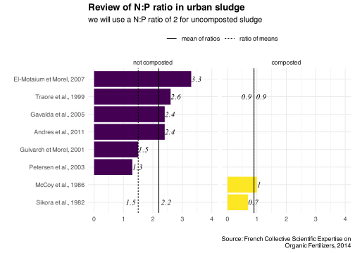

knitr::opts_chunk$set(warning=F, message=F, results=F, dev='svg')library(tidyverse) #loads multiple packages (see https://tidyverse.tidyverse.org/)#core tidyverse packages loaded:# ggplot2, for data visualisation. https://ggplot2.tidyverse.org/# dplyr, for data manipulation. https://dplyr.tidyverse.org/# tidyr, for data tidying. https://tidyr.tidyverse.org/# readr, for data import. https://readr.tidyverse.org/# purrr, for functional programming. https://purrr.tidyverse.org/# tibble, for tibbles, a modern re-imagining of data frames. https://tibble.tidyverse.org/# stringr, for strings. https://stringr.tidyverse.org/# forcats, for factors. https://forcats.tidyverse.org/# lubridate, for date/times. https://lubridate.tidyverse.org/#also loads the following packages (less frequently used):# Working with specific types of vectors:# hms, for times. https://hms.tidyverse.org/# Importing other types of data:# feather, for sharing with Python and other languages. https://github.com/wesm/feather# haven, for SPSS, SAS and Stata files. https://haven.tidyverse.org/# httr, for web apis. https://httr.r-lib.org/# jsonlite for JSON. https://arxiv.org/abs/1403.2805# readxl, for .xls and .xlsx files. https://readxl.tidyverse.org/# rvest, for web scraping. https://rvest.tidyverse.org/# xml2, for XML. https://xml2.r-lib.org/# Modelling# modelr, for modelling within a pipeline. https://modelr.tidyverse.org/# broom, for turning models into tidy data. https://broom.tidymodels.org/# Use the conflicted package (<http://conflicted.r-lib.org/>) to force all conflicts to become errors#setting graphs themetheme_set(theme_minimal() +theme(plot.title =element_text(face="bold")) )#setting viridis theme for colorsscale_colour_continuous <- scale_colour_viridis_cscale_colour_discrete <- scale_colour_viridis_dscale_colour_binned <- scale_colour_viridis_b#setting viridis theme for fillscale_fill_continuous <- scale_fill_viridis_cscale_fill_discrete <- scale_fill_viridis_dscale_fill_binned <- scale_fill_viridis_bpath_source <-"source_data/0_sludge_composition/"Source <-"Sources: Water Agencies\nComputation Thomas Starck"# Load the function filesource("functions.R")
Esco MAFOR
We use a French review (collective scientific expertise) on organic fertilizers, called Esco MAFOR. Link to the review (values used page 413).
Below are the P content, N content and N:P ratio in the reported studies, for composted and not composted urban sludge. Mohanty et al. (2006) seems to be an outlier due to very low P content and high N:P ratio. We will exclude it in the following.
g_composition(rounded_values, "P") +labs(title ="Review of P content in urban sludge",subtitle ="g of P per kg of Dry Matter" ) +ylim(0, 40)

Code
g_composition(rounded_values, "N") +labs(title ="Review of N content in urban sludge",subtitle ="g of N per kg of Dry Matter" ) +ylim(0, 50)

Code
g_composition(rounded_values, "N_P_ratio") +labs(title ="Review of N:P ratio in urban sludge",subtitle ="" ) +ylim(0, 8)

For P and N:P values, we remove the Mohanty et al. (2006) value which seems to be an outlier. Composted values are indicative, we will not use them because there are only 2 very old studies.
We compute 2 different mean values for the N:P ratio.
The mean of the ratios, based on the 6 values
The ratio of the N and P average contents, based on 13 P values and 7 N values
For first method gices a ratio of 2.2, the second 1.5. We will use a ratio of 2 for our study.
Code
#mean P content no compostedtemp <- review_sludge %>%filter(compost=="not composted", Study!="Mohanty et al., 2006")mean_P_no_compost <-round(mean(temp$P, na.rm=T), 0)#mean P content compostedtemp <- review_sludge %>%filter(Study!="Mohanty et al., 2006"& compost=="composted")mean_P_compost <-round(mean(temp$P, na.rm=T), 0)#mean N content not compostedtemp <- review_sludge %>%filter(compost=="not composted")mean_N_no_compost <-round(mean(temp$N, na.rm=T), 0)#mean N content compostedtemp <- review_sludge %>%filter(compost=="composted")mean_N_compost <-round(mean(temp$N, na.rm=T), 0)#mean N:P ratio not compostedtemp <- review_sludge %>%filter(compost=="not composted", Study!="Mohanty et al., 2006")mean_ratio_NP_no_compost <-round(mean(temp$N_P_ratio, na.rm=T), 1)#mean N:P ratio compostedtemp <- review_sludge %>%filter(compost=="composted")mean_ratio_NP_compost <-round(mean(temp$N_P_ratio, na.rm=T), 1)#ratio of means N and P no compostratio_means_NP_no_compost <-round(mean_N_no_compost/mean_P_no_compost, 1)#ratio of means N and P compostratio_means_NP_compost <-round(mean_N_compost/mean_P_compost, 1)mean_values <-data.frame(compost =c("not composted", "composted"),P =c(mean_P_no_compost, mean_P_compost),N =c(mean_N_no_compost, mean_N_compost),N_P_mean_of_ratios =c(mean_ratio_NP_no_compost, mean_ratio_NP_compost),N_P_ratio_of_means =c(ratio_means_NP_no_compost, ratio_means_NP_compost),N_P_ratio =c(2, 0.9))mean_values$compost <-factor( mean_values$compost,c("not composted", "composted"))f_save_csv_files( mean_values, "output_data/sludge_composition/","N_P_sludge_review.csv")
g_composition(rounded_values %>%filter(Study!="Mohanty et al., 2006"), "P") +labs(title ="Review of P content in urban sludge",subtitle ="g of P per kg of Dry Matter" ) +ylim(0, 40) +geom_hline(data = mean_values, aes(yintercept=P), linetype="dashed") +geom_text(data = mean_values, hjust=-0.2, family ="Times New Roman", fontface ="italic",aes(x="Traore et al., 1999", y=P, label=paste("mean:", P)) )

Code
g_composition(rounded_values, "N") +labs(title ="Review of N content in urban sludge",subtitle ="g of N per kg of Dry Matter" ) +ylim(0, 50) +geom_hline(data = mean_values, aes(yintercept=N), linetype="dashed") +geom_text(data = mean_values, hjust=-0.2, family ="Times New Roman", fontface ="italic",aes(x="Mohanty et al., 2006", y=N, label=paste("mean:", N)) )
Code
g_composition(rounded_values %>%filter(Study!="Mohanty et al., 2006"), "N_P_ratio") +labs(title ="Review of N:P ratio in urban sludge",subtitle ="we will use a N:P ratio of 2 for uncomposted sludge" ) +ylim(0, 4) +#mean of ratiosgeom_hline(data = mean_values, aes(yintercept=N_P_mean_of_ratios, linetype="mean of ratios")) +geom_text(data = mean_values, hjust=-0.2, family ="Times New Roman", fontface ="italic",aes(x=c("Sikora et al., 1982", "Traore et al., 1999"), y=N_P_mean_of_ratios, label= N_P_mean_of_ratios) ) +#ratio of meansgeom_hline(data = mean_values, aes(yintercept=N_P_ratio_of_means, linetype="ratio of means")) +geom_text(data = mean_values, hjust=1.2, family ="Times New Roman", fontface ="italic",aes(x=c("Sikora et al., 1982", "Traore et al., 1999"), y=N_P_ratio_of_means, label= N_P_ratio_of_means) ) +theme(legend.position ="top") +labs(linetype="") +guides(fill ="none") #not showing composted/not composted legend

Sillage data
SILLAGE is a databse referencing analyses of sludge spread on crops in France. For now we cannot exploit its results, but in the future we may compare it to the method we use to determine N and P sludge content from WWTP removal efficiencies.
source_data <-"source_data/0_sludge_composition/sillage_data/"file_sillage <-read_csv2(paste0(source_data, "Export_Sillage_20230406 2.csv"))#ATTENTION LE WEIGHT N EST PEUT ETRE PAS BON POUR LES NUTRIMENTS EN DM CAR JE DIVISE PAR DM QUI A UN N DIFFERENT DU NUTRIMENT#infra and steu dep and name are the same, we only keep steu vector#nametemp <- file_sillage %>%filter(nom_infra != nom_steu) #empty, exactly the same#deptemp <- file_sillage %>%filter(dep_infra != dep_steu) #only 18 differences, just small error#select variables of interest and change namesillage <- file_sillage %>%select(ID = numero_dossier,sludge_type = libelle_type_dossier,INSEE_DEP_analysis = depart_instruction,INSEE_DEP_WWTP = dep_steu, #same as dep_infraname_WWTP = nom_steu, #same as nom_infracode_WWTP = code_infra, WWTP_or_industry = origine_infra,date_sample = date_prelevement,date_analysis = date_analyse,nutrient = parametre_court,value = resultat_analyse,unit = unite, analyse_cdn, # a comprendre fraction_analysee # a comprendre ) %>%mutate(date_analysis =as.Date(date_analysis),date =as.Date(date_sample),Year_analysis =format(date_analysis, format="%Y"),Year =format(date_sample, format="%Y"),value =as.numeric(value) )#problem with years : 0017, 0018 and 1900. sort(unique(sillage$Year))#we remove 1900 and transform 0017 and 0018 into 2018 and 2017sillage <- sillage %>%filter(Year!="1900") %>%mutate(Year =case_when( Year=="0017"~"2017", Year=="0018"~"2018", T~Year ) )#add years categoriesf_year_categories <-function(dataset){ dataset <- dataset %>%mutate(Year_category =case_when( Year %in%c(1990, 1991, 1992, 1993, 1994) ~"1990-1994", Year %in%c(1995, 1996, 1997, 1998, 1999) ~"1995-1999", Year %in%c(2000, 2001, 2002, 2003, 2004) ~"2000-2004", Year %in%c(2005, 2006, 2007, 2008, 2009) ~"2005-2009", Year %in%c(2010, 2011, 2012, 2013, 2014) ~"2010-2014", Year %in%c(2015, 2016, 2017, 2018, 2019) ~"2015-2019", Year %in%c(2020, 2021, 2022, 2023, 2024) ~"2020-2024" ) )return(dataset)}sillage <-f_year_categories(sillage)#water agency basins based on WWTP code, remove overseassillage <- sillage %>%mutate(basin=case_when(substr(code_WWTP, 1, 2) =="01"~"Artois-Picardie",substr(code_WWTP, 1, 2) =="02"~"Rhin-Meuse",substr(code_WWTP, 1, 2) =="03"~"Seine-Normandie",substr(code_WWTP, 1, 2) =="04"~"Loire-Bretagne",substr(code_WWTP, 1, 2) =="05"~"Adour-Garonne",substr(code_WWTP, 1, 2) %in%c("06", "12") ~"Rhône-Méditerranée", T ~"Overseas and others" ) ) %>%filter(basin!="Overseas and others")sillage <- sillage %>%mutate(nutrient =case_when( nutrient =="K2O"~"K2O", nutrient =="NGL"~"NGL", nutrient =="Mat. sèch"~"DM", nutrient =="NK"~"NTK", nutrient =="P total"~"P", nutrient =="N orga"~"N_orga" ) )
We group each WWTP by Year and take the MEDIAN value of each nutrient, and also keep in memory the number of measures. Transform K2O in K, convert from % MB to % MS
Code
test <- sillage %>%group_by(basin, code_WWTP, name_WWTP, Year_category, nutrient) %>%summarise(n =n(),nutrient_count =paste0("n_", nutrient),value =signif(median(value, na.rm = T), digits=3) ) %>%distinct() %>%ungroup()test <-bind_rows( test %>%select(basin, code_WWTP, name_WWTP, Year_category, variable = nutrient, value), test %>%select(basin, code_WWTP, name_WWTP, Year_category, variable = nutrient_count, value = n)) %>%spread( variable, value )#transform K2O into K, and %MB into g per kgDMtest <- test %>%rename(K = K2O, n_K = n_K2O) %>%mutate(K = K*0.83) %>%#g per kgMBmutate(K_MB = K*10, NGL_MB = NGL*10, P_MB = P*10, NTK_MB = NTK*10, N_orga_MB = N_orga/1000 ) %>%#%DMmutate(K_DM = K_MB/(DM/100), NGL_DM = NGL_MB/(DM/100), P_DM = P_MB/(DM/100), NTK_DM = NTK_MB/(DM/100), N_orga_DM = N_orga_MB/(DM/100) )
first glimpse/ Only 2 WWTP for Rhin-Meuse, we remove this basin. We also remove data before 2000. carfeul N org in different unit
Code
f_graph_compo_all <-function(dataset, var, var_weight, exp_min, exp_max){ g <-ggplot(dataset) +geom_jitter(aes(Year_category, !!as.symbol(var), size=!!as.symbol(var_weight), color=basin), alpha=.7) +scale_size_continuous(range =c(0, 15)) +scale_y_continuous(limits=c(10^(exp_min), 10^exp_max),minor_breaks =c(1:10%o%10^(exp_min:exp_max)),breaks =c(1%o%10^(exp_min:exp_max)),labels = scales::label_number(drop0trailing =TRUE) ) +coord_trans(y="log2") +facet_wrap(vars(basin)) +theme(legend.position ="none",axis.text.x =element_text(angle =45, hjust=1) ) +labs(y =paste0("g", var, " per kg DM"), x="")return(g)}